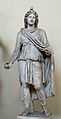
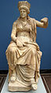

Roma mitolojisi
Roma mitolojisi, Antik Roma'da yaşayan insanların mitolojik inançlarının bütününe verilen isimdir. Genelde iki ana bölümü olduğu düşünülür; ilk bölüm ki daha sonraları etkin olmuştur ve edebidir, genellikle Yunan mitolojisindeki öğelerin Romalılaştırılmış hallerinden meydana gelir, ikinci bölüm ise daha erken dönemlerde etkin olmuş olan ve daha çok kültik olan Yunan-benzeri diğer yarıdan farklı uygulama ve inançlara sahip daha özerk bir bölümdür.
Erken Roma Mitinin Doğası
Arkaik Romalıların bir mite sahip olmadıkları söylenebilir. Bununla kastedilen, sonraki dönemde şairlerinin Yunan mitolojisinden esinlenmesine kadarki dönemde, Romalıların tanrıların kökenine dair, Yunandaki Titanomaki veya Zeus'un Hera tarafından baştan çıkartılması gibi, bir mit anlayışının veya sıralı bir anlatının bulunmamasıdır.
Romalıların bu erken dönemde sahip oldukları dini yapı iki ana nokta ile tanımlanabilir:
- Çok gelişmiş bir ayin sistemi, ruhban okulları ve ilgi tanrı "küme"leri;
- Kentin (Roma kentinin) bulunuşu ve kuruluşuna dair çok zengin bir tarihi mitler yapısı ki bu yapı fani insanlar ile birlikte çoğu ilahi müdahaleyi de içerir.
Erken Dönem Mitolojisinde Tanrılar
- Romalı tanrı anlayışı, erken dönemde, Yunandakinden çok farklı bir biçimdeydi. Örneğin, eğer bir Yunana Demeter'i soracak olsaydınız, büyük ihtimalle, ünlü mitten yani, Hades'in Persephone'yi kaçırışı üzerine Demeter'in yaşadığı acılardan bahsedecektir. Fakat bir Romalıya Ceres hakkında sorarsanız size onun resmi bir rahibinin, flameninin, olduğunu bu rahibin Jüpiter, Mars ve Quirinus'un flamenlerine karşı ast, ama Flora ve Pomona'nın flamenlerine karşı üst olduğunu belirtecektir. Ayrıca onun diğer ziraat tanrıları Liber ve Libera ile birlikte bir üçlü oluşturduğunu da belirtebilir; ve hatta, ona bağlı olan belirli görevleri olan daha ast tanrıları sıralayabilir: Sarritor (yabani otları temizleme), Messor (hasat yapmak), İnsitor (tohum ekmek) vb.
- Bu örnekten de anlaşılabileceği gibi, arkaik Roma mitolojisi, en azından tanrılar ve tanrı anlayışı açısından, anlatılardan değil de tanrılar arasında ve tanrılar ile insanlar arasında yer alan kenetlenmiş ve kompleks bir ilişkiler ağından oluşmaktaydı.
- Erken Romalıların özgün dini, daha sonraları birçok farklı ve çelişen inancın eklenmesi ve özellikle de Yunan mitolojisinin büyük bir kısmının asimile edilmesiyle, çok farklı bir hal ve yapıya dönüşmüş, farklılaşmıştır.
Roma Tarihi Hakkında Erken Dönem Mitolojisi
- Tanrılar hakkında bir anlatı geleneği olmasa da Romalıların kentlerinin (Roma'nın) bulunuşu, kuruluşu ve ilk dönemleri hakkında çok zengin ve yarı-tarihi yarı-efsanevi anlatı kültürleri mevcuttu. İlk krallar, Romulus ve Numa gibi, tamamen mitik bir doğaya sahipti ve bu tür efsanevi öğeler Cumhuriyetin ilk dönemlerine kadar uzanabilmekteydi.
- Bugün, Aeneas ve Liviu'un ilk bir-iki kitabı bu insan mitolojisinin en önemli kaynaklarını oluşturmaktadır.
-
Özgün Roma ve İtalik Tanrılar
- Reski rahiplik, roma ayinsel ibadet ve uygulamalarını iki tanrı sınıfına ayırmaktadır: di indigetes ve de novensides veya novensiles. İndigetes Roma devletinin, şehrinin, özgün tanrılarıydılar ve böyle yaklaşık 30 tanrıya adanmış özel bayramlar (festivaller) mevcuttu. Novensides ise kültleri tarihi süreçte daha sonraları şehre gelmiş tanrılardır ki bunların ortaya çıkışları genellikle belirli bir kriz veya ihtiyacın doğduğu bilinen, belirli tarihlerdir.
- Erken Roma tanrılarına, di indigetes`e, ilaveten çeşitli etkinlik ve eylemlerde çağırılan özelleşmiş veya uzmanlaşmış küçük tanrılar da mevcuttu. Bu tür eylemlere ayinsel bir boyut kazandırılmıştı, örneğin ekini ekerken belli bir tanrı ismiyle çağırılır, hasat ederkense bir başkası çağırıldı. Aslında bu yoğun ayin kültürünün veküçük tanrı anlayışının temelinde politeizmden çok bir tür polidemonizm yatmaktaydı; zira bu küçük tanrıların güçleri ancak uzmanlaştıkları/özelleştikleri eyleme yetmekteydi, diğer eylemlerde herhangi bir güçleri bulunmuyor ve bu nedenle de tanrıdan çok bir tür ilahi ruh kavramına yakındılar.
- İlk panteonun başında Jüpiter, Mars ve Quirinus üçlemesi (ki bu üçünün rahipleri veya flamenleri en yüksek dereceye sahiptiler) ile Janus ve Vesta bulunmaktaydı. Erken dönemde bu tanrıların pek bir kişilikleri (veya şahsi özellikleri) yoktu ve kişisel tarihlerinde evlilik ve soy ağaçları bulunmuyordu.
Roma Mitolojisi Ve Tanrıları
Abeona - Roma mitolojisinde çocukların koruyucusu Tanrıça.
Abundantia - Roma mitolojisinde fazla etkin olmayan bolluk, başarı ve şans Tanrıçası.
Aequitas - Roma mitolojisinde adil işlerin ve anlaşmaların Tanrısı.
Alemonia - Henüz doğmamış çocukları besleyen Tanrıça.
Anna Perenna - Yeni yıl Tanrıçası. Onun festivali Mart ayının 15 de kutlanırdı. Romalılar amnis perennis ("sonsuz akıntı") kelimesine çeşitli anlamlar vermişler
Antevorte - Roma mitolojisinde geleceğin Tanrıçası.
Appiades - Appian su kemerinin yakınlığında tapınakları bulunan beş Tanrıçaya verilen genel ad. Bu Tanrıçalar: Concordia, Minerva, Pax, Venus, ve Vesta idi.
Aurora - Şafak Tanrıçası. Yunan mitolojisinde ona Eos demişler.
Bellona - Romalı'ların Zafer Tanrıçası. Kapadokya Tanrıçası Ma ve Yunan Tanrıçası Nike ile aynı özellikleri taşımaktadır.
Bubona - Roma mitolojisinde atların ve büyükbaş hayvanların Tanrıçası.
Camenta - (Egeria) Romalıların Doğum Tanrıçası.
Caca - Romalıların Ocak Tanrıçası ve Gigant Cacus'un kızakardeşi.
Concordia - Romalıların Barış Tanrıçası.
Concus - Eski Roma Tanrılarından biri. Gizlemek, örtmek, saklamak Tanrısıydı.
Copia - Servet ve bolluk Tanrıçası.
Dea Dia - Büyüme ve gelişme Tanrıçası.
Dea Tacita - Kelime anlamıyla 'Sessizliğin Tanrıçası'. Roma mitolojisinde Ölüm Tanrıçası.
Diana - Doğa, verimlilik ve çocuk doğum Tanrıçası. O Capua yanındaki Tifata dağında çalışır ve aynı zamanda Ay Tanrıçası görevini de üstlenmiş. Latinlarin de Tanrıçasıydı.
Disciplina - Roma mitolojisinde Disiplin ve düzen Tanrıçası.
Dius Fidus - Ant ve Yemin Tanrısı. Sabine kökenli bir Tanrıydı.
Duellona - Roma Tanrıçası.
Edusa - Küçük çoçuklara beslenmeyi öğreten Tanrıça.
Egeria - Doğum Tanrıçası. Roma'nın kurucusu Romulus'un koruyucusu.
Eventus Bonus - (Bonus Eventus)'İyi Akşamlar'. İş yaşamında başarı Tanrısı. Ayrıca Hasat Tanrısı olarak da bilinir. Heykeli Roma'da, Jupiter tapınağının yanında konulmuştur.
Genius - Roma Tanrısı. Bir nevi koruyucu melek görevini görüyordu. Her insanın kendine ait bir Genius'u olduğuna inanılırdı.
Grazia'lar - (Graces) - Letafet perilerinin Roma mitolojisindeki isimleri. Yunan mitolojisinde Kharit'ler olarak geçerler. Doğadaki güzellik ve neşe insanların da, Tanrıların da kalplerinde duygukları, güzellik hayranlığı onların eseridir.
Fabulinus - Bebeklerin Tanrısı. Efsaneye göre, bu Tanrı Romalı çocuklara konuşmayı öğretirdi.
Faunus - Vahşi doğanın ve verimliliğin Tanrısı. Nasihatçı olarak da tapınım ve saygı görmüştü. O Yunanların doğa tanrısı Pan ile aynı özellikleri taşımıştır, boynuz ve yeleleri varmış. Büyükbaş hayvanların da koruyucusu olarak bilinmiştir. Ona Roma Kır Tanrıları Faun'lar eşlik ederlermiş. Faun'lar Yunan mitolojisinde Satyr'ler olarak yerlerini almışlar. Faunus'un bayan benzeri Fauna'dır. Kurt suratı, çelenk ve kadeh Faunus'un simgeleridir.
Febris - Telaş ve paniğe karşı koruyucu Tanrıça. Febris ("heyecan") antik Roma'da üç tapınağa sahipti. Bu tanınaklardan biri Palatine ve Velabrum arasında yer almıştı.
Flora - İlkbaharın taze çiçeklerinin Tanrıçası. Quirinalis yakınında tapınağı vardı. Dördüncü yüzyılda bu Tanrıçanın şerefine, 28 Nisan - 1 Mayıs tarihleri arasında Floralia festivali kutlanırdı. Flora Yunanların Chloris'i ile özdeşleştirilmiştir.
İanus - (Janus) - Romalıların inancına göre İanus, evlerin kapılarını bekleyen bir Tanrıydı.
Junon - (Iuno) Romalıların baş Tanrıça Hera'ya taktıkları ad.
Jupiter - Romalıların baş Tanrı Zeus'a verdikleri ad.
Juturne - (Juturna) Romalıların Su Kaynakları Tanrıçası. Jupiter onu periye çevirmiş ve Latium yakınlığındaki Lavinium'da bir su kaynağını ona armağan etmişti. O Fontus (Fons)'un annesi ve Janus'un karısıydı.
Juventus - Gençlik Tanrıçasının adı. Romalılar gençlik çağına giren delikanlılara bu adı koyardı.
Kybele - Roma ve eski Anadolu mitolojisinde Tanrıların anası. Onun karakteri Phyrgia'da ortaya çıkmış, daha sonra Yunanistan'a kadar yayılmıştır. Yunanlarda Rheia onun yerini almıştır.
Lar - Romalıların ocakbaşı Tanrısı.
Larv'lar - Roma inançlarına göre tehlikeli ve insanlara bela olan ruhlar. Anlatılanlara göre, Larv'lar ellerinde uğursuzluğun sembolü olan birer baykuş taşırlardı.
Libitina - Roma da ölüler için yapılan merasimi koruyan Tanrıça
Lima - Başlangıçlar Tanrıçası.
Luna - Romalıların Ay Tanrıçasına verdikleri ad. Yunanlar ona Selene derler.
Lucina - Kadınlara doğumda yardım eden ve sancıları azaltan Tanrıça. Sonraları 'çocuklara ışık bahşeden' anlamına gelen Juno adını almıştır.
Maia - Mayıs ayına adını veren Tanrıça. Bu ayda ona kurbanlar verilir, adaklar adanırdı. Mitolojide Maia Vulcan'ın yardımcısıydı. Bazen Fauna ve Ops ile eşit tutulurdu.
Mars - İlk başlarda bitkilerin köklerini besleyen bir Tanrı olmasına rağmen daha sonra Yunan mitolojisinden etkilenerek Savaş Tanrısı sıfatını kazanmıştı. Yunanlıların aksine Romalılar onu severlerdi. Onlara göre ise Mars üstün, soylu bir görünüşü olan hiç yenilmeyen bir Tanrıydı.
Mater Matuta - Romalıların şafak Tanrısı.
Minerva - (Minerve) Romalıların Zeka Tanrıçası Athena'ya verdikleri isim.
Moneta - Başarı Tanrıçası.
Nascio - Roma mitolojisinde Doğum Tanrıçalarından biri.
Necessitas - Zaruret, Zorunluluk Tanrıçasıydı. Kader Tanrıçası olarak da bilinmekteydi. Romalılar onun insan şeklinde olduğuna inanırlardı. Yunanlardaki ismi Ananke idi.
Neptun - Romalıların Deniz Tanrısı Poseidon'a verdikleri ad.
Nerio - Romalılarda savaş Tanrısının karısı olup, kahramanlığı temsil eder.
Nundina - Roma mitolojisinde yeni doğan bebeğe isim takıldığı dokuzuncu günün Tanrıçası.
Occator - Acı ve üzüntü Tanrısy.
Orcus - Ölüm ve yeraltı dünyasının Tanrısı. Bazen çok zalim ve korkunç, bazense oldukça iyi bir Tanrı olarak tanımlanmıştır. Yunan Tanrııs Hades'le aynı özellikleri taşımıştı.
Pales - Romalıların koyun sürülerini koruyucusu olduğuna inandıkları Tanrı.
Parkae - Romalıların Ralih Tanrıçalarına verdikleri ad.
Penat'lar - Romalıların Ev Tanrılarına verdikleri ad.
Pilumunus - Yeni doğan çocukları koruyan Roma Tanrıçası.
Poena - Roma mitolojisinde ceza Tanrıçası
Pomona - Romalıların Meyve Tanrıçası.
Puta - Ağaçlar ve asmaları budamakla ilgili olan Roma Tanrıçası.
Romulus ile Remus - Roma mitojisinde ikiz kardeşler. Mars ile Rea Silvanın oğulları. Küçük yaşta Tiber nehrine bırakılan ikizler, dişi bir kurt tarafından bulunmuş, onun sütüyle beslenmişlerdi. Sonra onları Picus adında bir çoban keşfetmiş, evine götürüp besleyip büyütmüştü. Kardeşlerin kaderinde Roma şehrinin temelini koymak vardı. Büyüdükten sonra iki kardeş arasında şehri hangisinin kuracağı konusunda tartışma çıkmış ve bu tartışma Remus'un ölümüyle sonuçlanmıştı. Romulus Roma şehrinin kurucusu ve ilk kralı oldu. Roma'nın kurucusu Romulus da tanrısallaştırılmıştı.
Salus - Romalıların Sağlık Tanrıçası.
Saturnus - Roma Tanrısı Satürnüs çiftçilerin Tanrısı olarak görülmüştür. Mitolojiye göre Satürnüs ve karısı hasat Tanrıçası olan Ops ekincileri korurmuş. Yunan mitolojisinin etkisi ile sonraları Satürnüs Kronos kişiliği kazanmıştır. Satürnüs'ün İtalya'yı yönettiği devre 'altın çağ' adını vermişler.
Silvanus - Romalıların Orman, Bağ - bahçe Tanrısı.
Summanus - Romalıların gece çakan Şimşek Tanrısı.
Tellus - Romalıların Yunan mitolojisindeki Toprak Ana (Gaia) ya verdikleri ad.
Terminüs - Romalıların sınır taşı Tanrısı.
Vacuna - Sabinelilerin Tarım Tanrıçası. Vacuna'ya kutsal orman Reate'nin bulunduğu bölgede tapınılmıştır.
Velovis - Bir Roma Tanrısı. Yer altı Tanrılarından sayılmakta, volkanlar ve balıkları bunun idare ettiğine inanılır.
Veritas - Adalet ve Gerçek Tanrıçası. Satürnüs'ün kıız.
Vesta - Aile ocağı Tanrıçası
Virtus - Roma mitolojisinde cesaret ve savaş gücünün Tanrısı
Vulcanus - Ateş Tanrısı. Demircilik ve sanatla da uğraşır. Onun dökümhanesi Etna dağındadır. Burada o yardımcıları ile beraber Tanrılara ve kahramanlara silah yapardı. Yunan mitolojisinde bu Tanrı Hephaestus adını almıştı.
Yabancı Tanrılar
Roma devleti etrafındaki bölgeleri fethettikçe komşu kültür ve toplulukların yerel tanrıları da Roma mitolojisine giriş yapmıştır. Romalılar geleneksel olarak yeni fethedilen yerlerin tanrılarına da kendi özgün tanrıları ile bir tutmuş aynı saygı ve onuru bahşetmişlerdir. Birçok seferde yeni fethedilen bölgenin tanrılarının da Roma'da yeni tapınaklarda yer almaları için davette bulunulmuştur. Bu nedenle Roma'ya özgü olmayan birçok farklı kült, tanrı ve tanrıça Roma mitolojisine giriş yapmış kimi zaman bu yeni tanrı ve tanrıçalar hali hazırda Roma mitolojisinde var olan belirli tanrı ve tanrıçalarla özdeşleştirilmiştir.
- 
Pers kültüründen gelen Mitra
Mısır ana tanrıçası İsis
Kibele, Anadolu kökenli ana tanrıça
.
Bazı Önemli Roma Tanrıları
Ceres, Dünya tanrıçası
Cupid, Aşk tanrısı
Diana, Avcılık ve Ay tanrıçası
Janus, Kapıların tanrısı
Jüpiter, Tanrıların kralı
Merkür, Haberci tanrı
Minerva, Hikmet tanrıçası
Plüton, Yeraltı dünyasının kralı
Neptün, Denizlerin tanrısı
Vulcan, Demircilik tanrısı
.